世界痴迷于排名。我们会对运动员、运动队、医院、餐馆、电影、流行歌曲、学生、学院、城市、工作、汽车等进行各种排名。我们热衷于知道哪个是最好的，哪些是最重要的“前十名”。
这是一堆无稽之谈：有趣的废话，却是谬论。在某些情况下，这种谬论源自排名方法的主观性。比如你所在镇上的某家餐馆被认为是“最好的”，但并不意味着它是你最喜欢的。你的偏好可能与评论家对餐厅的评价不一致，而且他们的评价可能相互矛盾。
我们可能能够选择一种客观的排名系统，但仍然会得到荒谬的结果。我们可以根据电影的票房来判断一部电影，这是客观的并可测算的。人们可以合理地认为，电影越好，愿意买票观影的人就会越多。但是一部高票房的电影可能会让你感到厌烦，而一部小众的、低成本的电影可能会令你感到愉悦。电影的票房高低可能与营销有关，并不能代表其本身的质量。
但是，假设我们能够摒弃所有的主观性，并且就如何比较竞争对手的方法达成普遍一致，那么我们或许可以让这个排名方法回归到它的数学要义。这种荒谬性消失了吗？
让我们玩一个简单的游戏。两个人轮流抛掷骰子，骰子点数最多的胜出。如果我们玩的是两个标准的骰子——两个都标有1到6的点数，那么一个骰子比另一个骰子更好的说法就是无意义的，因为它们完全一致。
现在让我们改变两个骰子上的点数。我们将这两个骰子命名为A和B，并用图中所示的值标在它们的六个面上。
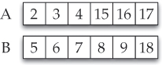
哪个更好，A还是B？如果你正在玩这个游戏，你更喜欢哪个骰子？
为了回答这个问题，我们考虑骰子落下后可能显示的所有点数。如果A的点数是2，那么2可能与B上六个数字中的任何一个进行比较。如果A的点数是3，那么它仍然会遇上B上的任一个数字。总共有6+6+6+6+6+6=6×6=36种可能的组合结果，所有这些结果的可能性相同。有时A赢，有时B赢（因为它们没有共同的数字，所以不会有平局）。哪个赢的次数更多呢？
让我们制作一个表格，显示所有36种可能的组合，并在每种情况下确定哪个骰子获胜：A或B。如下图：
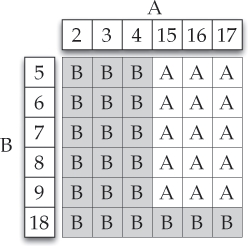
现在很容易看出，B是更好的骰子。在势均力敌的比赛中，B获胜的次数更多。计算表格中A和B的数量，我们看到A在36次比赛中平均赢得15次，而B赢得了21次。
赌徒们会说A的赔率是15∶21，而B的赔率是21∶15。数学家们将这个表示为概率：A获胜的概率为
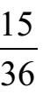
（约42%），B获胜的概率是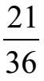
（或约58%）。按你喜欢的说法表述：B比A好。
现在我们加入第三个骰子。加入挑战者！C六面的数字如图所示。
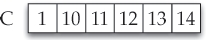
C按照同样的规则兴致勃勃地挑战B。两个骰子都抛出，点数大的一方胜出。B和C哪个更好？和以前一样，我们绘制一张显示所有36种可能结果的表格，并检验哪个骰子更有可能获胜。
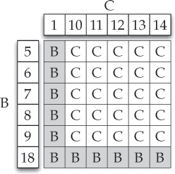
注意C比B更有可能获胜。C的获胜概率是
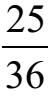
（约69%），而B只有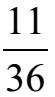
（约31%）。在势均力敌的比赛中，C比B好，B比A好。
这意味着C是三者中的“最佳”骰子，是这样吗？
在三个骰子中，似乎A是最差的，C是最好的。当A与C较量时会发生什么？想当然地，C会战胜A。
和以前一样，我们构建了一个显示所有可能结果的表格：
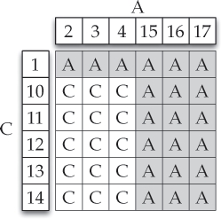
看哪！A比C好。骰子A获胜的概率是
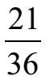
（约58%），但C获胜的概率是只有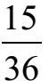
（约42%）。我们得出以下惊人的三个结论：
●B比A好，
●C比B好，而且
●A比C好。
可见比较这些骰子中的哪一个是“最好的”是没有意义的，试图对它们进行排名也是毫无意义的。我们在日常生活中还遇到过多少纯属无稽之谈的排名？
如图是另一组骰子，供你分析。
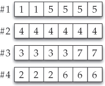
这个例子是斯坦福大学统计学教授布拉德利·埃夫隆（Bradley Efron）提出的。
考虑图中所示的四个骰子。计算1战胜2，2战胜3，3战胜4，4战胜1的概率。在各组较量中，哪个骰子是最好的？你如何对这些骰子进行排名？
答案在下一页。
你玩扑克吗？特别是，你玩德州扑克吗？想象一下，两个人正在玩，你可以偷看他们的底牌（也称“口袋”牌）。假设第一个玩家持有A♠和K♡，第二个玩家持有10◇和9◇。谁的获胜机会更大？第一个玩家有点数更高的牌，但第二个玩家有可能有顺子或同花顺。
要弄清楚哪一方更好，我们必须考虑先发出的五张面朝上的公共牌。有48张牌未发出（一副牌总数的52张减去两名玩家手中的4张牌）。原则上，公共牌的发放方式有无数可能，我们可以计算出哪个牌手——持有A♠K♥或持有10◇9◇——能够获胜（或者是平手）。公共牌的选取有近200万种可能的方式。这个过程用手工计算过于烦琐，但是计算机很容易完成。在网上搜索“扑克计算器”可以找到很多相关网站的链接迅速完成这个计算。
从其余48张牌中挑选5张牌有
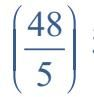
种可能，等于51712304。通过使用计算器，我们得知A♠K♥获胜概率是58.6%，10◇9◇的获胜概率是41%，他们获得平手的概率为0.4%。
结论：持有♠K♥比10◇9◇更有优势。
现在轮到你了。找一个扑克获胜概率计算器，并用它来比较这两组比赛：
●10◇9◇ 对战2♣2♥。
●2♣2♥ 对战A♠K♥。
使用计算器的结果来排列三种底牌的优劣：A♠K♥，10◇9◇和2♣2♥。
答案如下。
埃夫隆的骰子：
为四组比赛创建表格，在所有四种组合中，更好的骰子的获胜概率都是
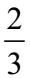
：＃1比＃2好，＃2比＃3好，＃3比＃4好，＃4比＃1好。这四个骰子的排名是没有意义的。德州扑克：
使用扑克计算器，我们得到以下结果：
• A♠K♡战胜10◇9◇的概率是58.6%。
• 10◇9◇战胜2♣2♥的概率是52.9%。
• 2♣2♥战胜A♠K♡的概率是52.3%。
这意味着A♠K♡优于10◇9◇，10◇9◇优于2♣2♥，2♣2♥优于A♠K♡。对这些底牌进行排名是没有意义的。
所有这一切都假定发生在只有两个人玩德州扑克的情况下，如果桌上有三名玩家，并且所有三张底牌同时亮出，会发生什么？